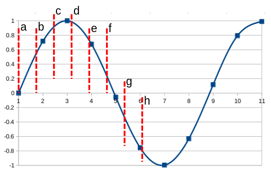

How problematic is resampling audio from 44.1 to 48 kHz?
Audio CDs are invariably recorded using a sampling rate of 44.1 kHz (44 100 samples per second). Most computer-based audio hardware has digital-to-analogue converters optimized to work at 48 kHz, or multiples thereof. This higher sampling rate was introduced shortly after CDs became mainstream; it was popularized by digital audio tape (DAT) recorders, and soon became almost universal.
A good-quality digital-to-analog converter (DAC) will be able to work natively at a range of different sample rates. However, the DACs found in a lot of computer equipment -- particularly hand-held devices -- often lack such a capability.
The question thus arises -- if we play a 44.1 kHz audio stream using a 48 kHz DAC, is there any loss of audio quality? It would seem intuitive that there would be some inaccuracy in this process -- after all, we don't know what samples would have been present, had we originally sampled at 48 kHz. So the resampling process involves an estimation, with concomitant inaccuracies.
Or does it?
The fact that the resampling might lead to inaccuracies, and to a loss of audio quality, is one of the drivers behind the "bit perfect" movement in computer audio. Many computers (and computing devices like phone handsets) invariably resample to suit their DACs. Even if you connect the device to an external DAC, that can play at the original sample rate, it will be too late -- the data will already have been resampled in software. A "bit perfect" audio player, allegedly, avoids problems of this sort, by interfacing directly with the DAC.
Still, it isn't obvious that the resampling can't be done in such a way that is inaudible; or, at least, as close as makes no difference.
The diagram below tries to demonstrate what's going on in the resampling process.

A visualization of the resampling problem: the blue squares are the
original 44.1kHz sample values; the smooth blue line is the analog output
of the DAC; the red dotted lines are the places where we want the
48kHz sample points, but don't have any data.
It's a rather busy diagram, so let my try to explain. The blue squares represent the original sample points, at 44.1 kHz. The smooth blue line represents the output from the system, after applying a perfect low-pass filter. If the audio were recorded and sampled perfectly, and if there really were such a thing as a perfect low-pass filter, then the smooth blue line would also represent the original audio signal, that was the input to the recording process. It wouldn't be an approximation -- it would be exact. None of these "perfect" things actually exist, but that's a different problem.
The dashed red lines, labeled with letters, indicate the points at which we want to synthesize the 48 kHz samples. Only the first of these new sample points (a) actually lines up with a real sample. How long must we wait, before the 44.1 and 48 kHz samples are in perfect alignment again? It turns out to be 300 samples later.
The problem of resampling amounts to this: what values shall we choose for the sample values at each of the red dashed lines?
There are a number of simple possibilities. Most obviously, we could just pick the real sample value which is closest in time to our nearest true sample point. This would be very accurate for samples a, e, and h; very inaccurate for samples c and f. Alternatively, we could draw a straight line between each of the original sample points, and interpolate along that line. For example, sample b lies on what is essentially a straight line between samples 1 and 2; sample f between 4 and 5. This kind of linear interpolation would produce reasonable results for most samples, but it would fail badly for sample c, because the line between samples 2 and 3 is far from a straight one.
We could overcome this problem by using a better interpolation method. For example, we could fit a cubic curve to the values at samples 2, 3, and 4, and then work out samples c and d from the values of this cubic expression. We do this all the time in image processing, and it works very well. It would probably work well for audio as well, although it's not used -- not in the same form, anyway -- in these applications.
In all these approaches to resampling, we're looking at approximations. They will probably be very good approximations, and not difficult to implement; but still approximations, nonetheless. The question therefore arises -- is there a way to resample that does not require any approximations?
It turns out that, in the "ideal world" we're currently inhabiting, there is.
If we really did have a perfect low-pass filter, and perfect analog-to-digital converter, we could simply generate the smooth curve on the diagram above, and then resample it at 48 kHz. In an ideal world, this would be a loss-free, perfect resampling. In practice, though, we don't need to do this. We know the characteristics of a perfect low-pass filter, and we can simulate it in software. If we can generate the blue curve in software, then we can sample it in software, too.
Of course, generating it in software amounts to generating a sampled representation of it; we can't work with a true analog signal except in the analog domain. So it looks as if we haven't gotten any further -- we've still got a problem of sampling. But it's an easier problem: let's generate the blue curve with a simulated sample rate of 7 056 000 samples per second, or 7.056 MHz. We can do that, because it's an integer multiple of the original 44.1 kHz sample rate -- it's actually 160 times the original rate. Then we sample this new waveform at 48 kHz. Because 7 056 000 is 147 times 48 kHz, every new sample point -- every dashed red line in the diagram above -- will line up exactly on a sample point. No further interpolation or approximation is required.
What does this all mean? Simply this: given sufficient computing resources, we can resample 44.1 kHz to 48 kHz perfectly. No loss, no inaccuracies.
The brute-force method of resampling I described above is not one that would ever be used in practice -- not as described, anyway. In practice, for real-time resampling, we typically use multiplication by a polyphase filter matrix. This operation consists of multiplications and additions -- probably millions of them, at the sample rates under consideration. The larger the matrix, the better the reconstruction -- but the more data that needs to be included. Perfect reconstruction would require a matrix of infinite size -- in practice, though, it would need "only" to include the entire set of samples. This is not only computationally burdensome, but such a process could not be carried out in real time: not even in theory, because the "entire set of samples" is not available until playback has finished.
So where does that leave us? A "perfect" resampling from 44.1 kHz to 48 kHz is theoretically possible. However, it can't be done in real time and, even offline, it will be slow. So approximations will be involved. The main approximation is to limit the number of samples that are used in the polyphase matrix operation. A larger number of samples leads to a more accurate resampling but, in real time, introduces larger delays in playback.
In practice, though, the noise floor of the best analog electronic equipment we currently have is about 21 bits. That is, if we strive for more precision, at any point in the recording or playback process, than can be represented by a 21-bit number, we're wasting resources. In reality, the amount of precision that can actually be "heard" by the human ear probably lies between 18 and 21 bits; we don't actually know, because it's impossible to test.
Whatever the true figure, 21-bit precision is actually achievable in a resampling operation from 44.1 to 48 kHz with relatively modest equipment. Probably that would not have been the case twenty years ago, or even ten years ago. These days, your smartphone probably has sufficient computing resources to do the necessary math without even warming up.
It would be easy to get sidetracked, at this point, by a discussion of whether some people's ears are more sensitive to inaccuracies than others'. That different people have different levels of aural sensitivity is undoubtedly true, but irrelevant -- once we have reduced errors to below the noise floor they are inaudible by definition. In reality almost nobody will be able to hear inaccuracies that are even above the noise floor. Almost nobody, for example, can hear the difference between 18-bit and 20-bit sampling, even on the best audio equipment, and 18 bits of precision is above the noise floor on the best modern equipment. In practice, most people can't tell the difference between 14-bit and 16-bit sampling, and that's certainly detectable.
Your smartphone probably can resample 44.1 kHz to 48 kHz in such a way that the errors are undetectable even in theory, because they are smaller than the noise floor. Proper audio equipment can certainly do so.
Still -- just because something is possible, doesn't mean it's actually implemented. I actually don't know how my Android phone deals with resampling. Maybe it does it perfectly; maybe, to save energy, it uses simplistic methods that would have been appropriate ten years ago. I should point out, however, that even resampling methods that are not state-of-the-art are probably good enough for most people, in most circumstances.
In conclusion: it's probably worth avoiding the resampling of 44.1 to 48 kHz audio if it's practical. Although this conversion can be done in such a way as to produce no audible errors, it's hard to be sure it actually is. It's particularly difficult with portable devices, because better-quality resampling uses more energy, and conserving battery life is probably deemed more important. Nevertheless, you're unlikely to hear the results of sub-optimal resampling, unless you're listening very carefully, using top-quality equipment; and even then it won't be very evident.